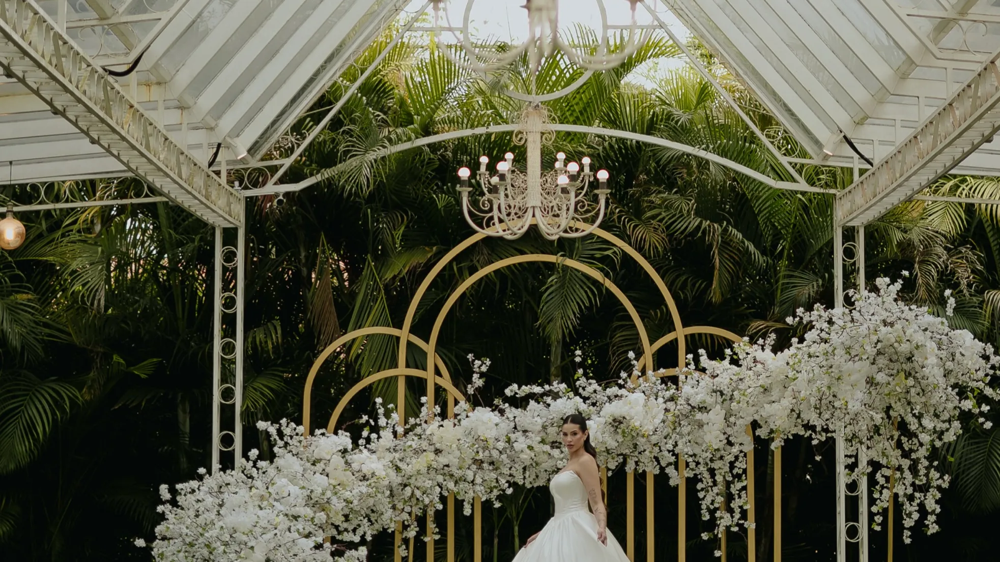
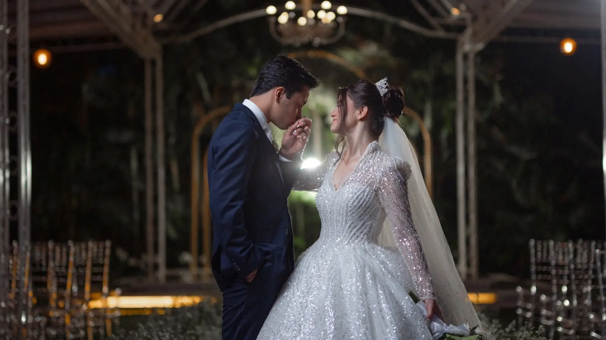
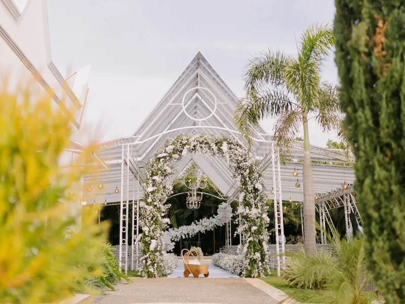

A Tenda Monreale, à noite
23°05′09″S · 47°22′34″O
Espaço para casamentos e eventos em Elias Fausto, SPUm cenário digno do seu sim.
N° 01
As celebrações
Para cada celebração, um château inteiro.
Casamentos, festas de quinze anos e eventos corporativos, com cerimônia, ensaio de fotos e festa no mesmo endereço.

Casamentos
Cerimônia sob o vidro, fotos no lago ao entardecer e festa no salão, sem trocar de endereço.
Ver casamentos
Quinze anos
Entrada pela escadaria dourada, valsa no salão e um ensaio de princesa entre jardins e lago.
Ver quinze anos
Corporativo
Palco, telões, som e iluminação para os encontros da sua empresa, com jardins para os intervalos.
Ver corporativoN° 02
A travessia
Atravesse o Château de tirolesa.
A tirolesa é um dos diferenciais do Château de Lumière. Role a página devagar e faça a travessia: da Tenda Monreale ao salão, por cima dos jardins e do lago.
Segure firme e role
Gostou da vista? Venha fazer a travessia de verdade.
Agendar visitaUm dia no Château, da manhã à noite


N° 03 — Um dia no Château
Role e veja o tempo passar
Manhã e tarde
Luz natural pelo vidro.
O teto de vidro da Tenda Monreale deixa o sol entrar, e o jardim tropical vira o pano de fundo da cerimônia.
Entardecer
A hora dourada.
O sol baixo aquece os arcos dourados e os jardins: é a hora das fotos mais bonitas.
Noite
Os cristais se acendem.
Lustres de cristal, passarela iluminada e pista de LED: o Château vira cenário de cinema.
N° 04
Motivos
Motivos para conhecer o Château.
- Avaliação no Google
- 4,9de 5, em 309 avaliações de quem celebrou aqui.
- Diferencial
- TirolesaDentro do espaço, para uma experiência que ninguém esquece.
- Cerimônia
- CobertaSob a Tenda Monreale, faça chuva ou faça sol.
- Distância
- 1hDe São Paulo, perto de Campinas, Indaiatuba e Itu.
N° 05 — A visita
Tudo começa com uma visita.
Nada substitui caminhar pelo espaço. Agende um horário e conheça cada ambiente com a nossa equipe.
- I
Você escolhe o dia
Pelo formulário ou pelo WhatsApp, em poucos minutos.
- II
Percorremos o Château
Tenda Monreale, salão, lago, jardins, suíte da noiva e a tirolesa.
- III
Desenhamos a proposta
Pensada para a sua data, o seu estilo e o número de convidados.
- IV
Celebramos juntos
Do planejamento ao último brinde.
N° 06
Álbum
Celebrações reais, fotografadas aqui.
Clique em uma foto para ver em tamanho grande.
Depoimentos de quem celebrou no Château de Lumière

N° 07 — Quem celebrou aqui
Lugar lindo, perfeito. Cada detalhe feito com muito capricho, um sonho.
01Onde fica o Château de Lumière?
Em Elias Fausto, SP, na Alameda das Flores, Estrada do Saltinho, a cerca de uma hora de São Paulo e perto de Campinas, Indaiatuba, Itu e Salto.
02Que tipos de evento vocês realizam?
Casamentos, festas de quinze anos e eventos corporativos.
03O Château tem tirolesa?
Sim. A tirolesa é um dos diferenciais do Château de Lumière. Consulte a equipe para saber como incluí-la na sua celebração.
04O espaço é acessível?
Sim. Entrada, banheiro e estacionamento são acessíveis para cadeira de rodas.
05Tem estacionamento?
Sim, com estacionamento amplo para os convidados.
N° 09 — Onde estamos
23°05′09″S
47°22′34″O
Alameda das Flores, Estrada do SaltinhoElias Fausto, São Paulo · CEP 13350-000
A cerca de uma hora de São Paulo. Perto de Campinas, Indaiatuba, Itu, Salto, Sorocaba e Piracicaba.

N° 10 — Agende sua visita
Venha ver de perto.
Agende uma visita e conheça a Tenda Monreale, o salão, o lago, a suíte da noiva e a tirolesa. Respondemos pelo WhatsApp.
- WhatsApp(19) 99411-2741
- Telefone(19) 99411-2741
- EndereçoElias Fausto, SP
- Agenda2027 · 2028 · 2029